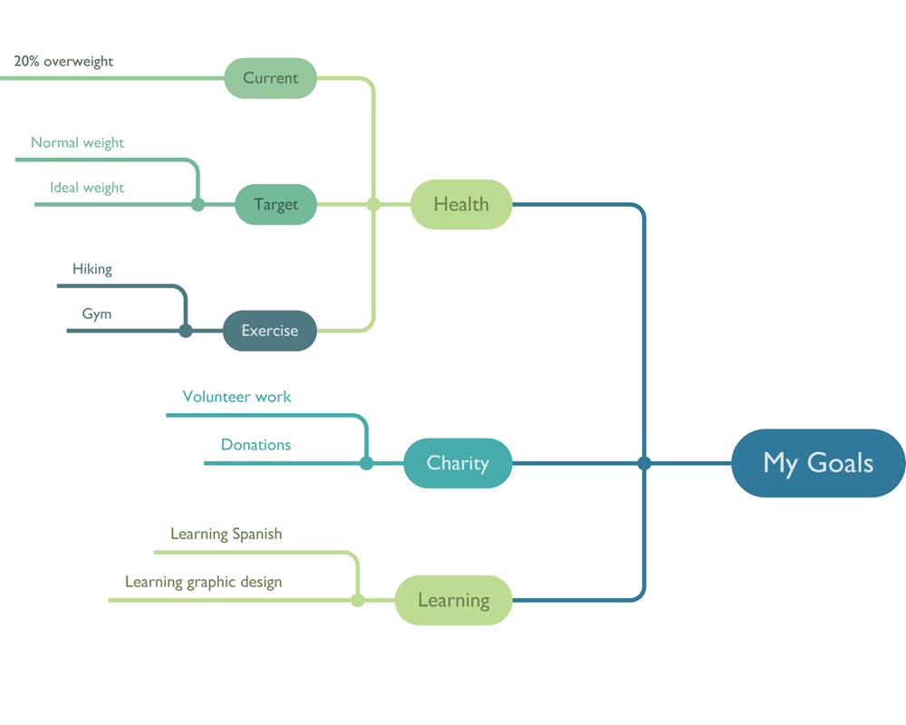
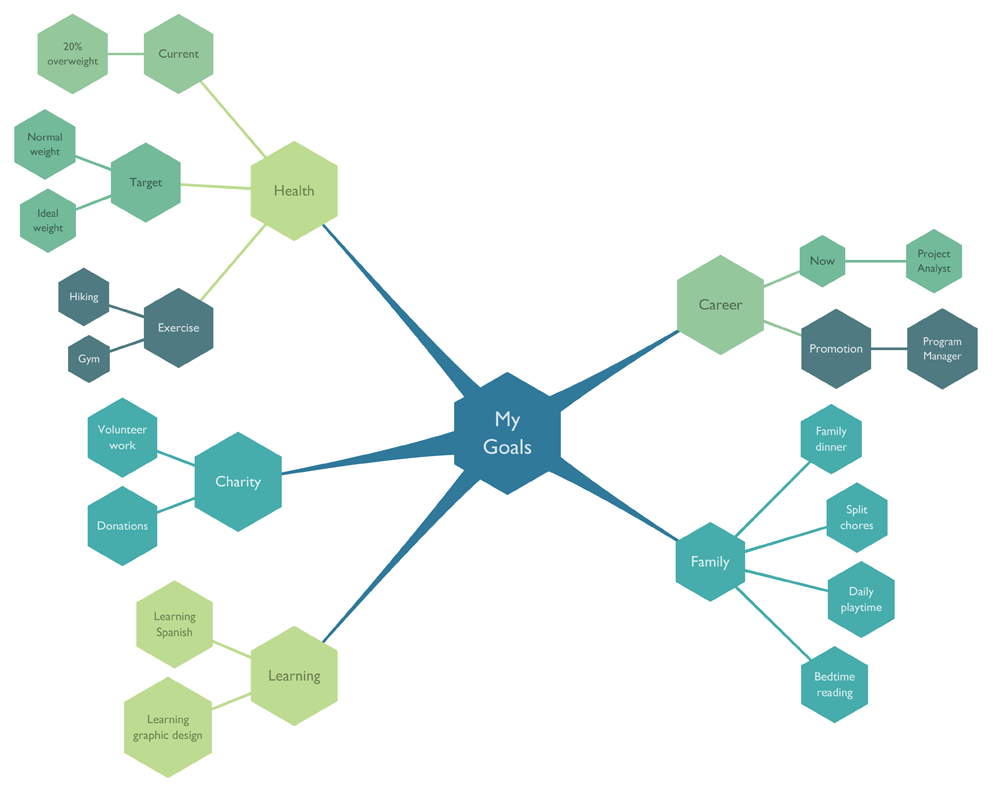
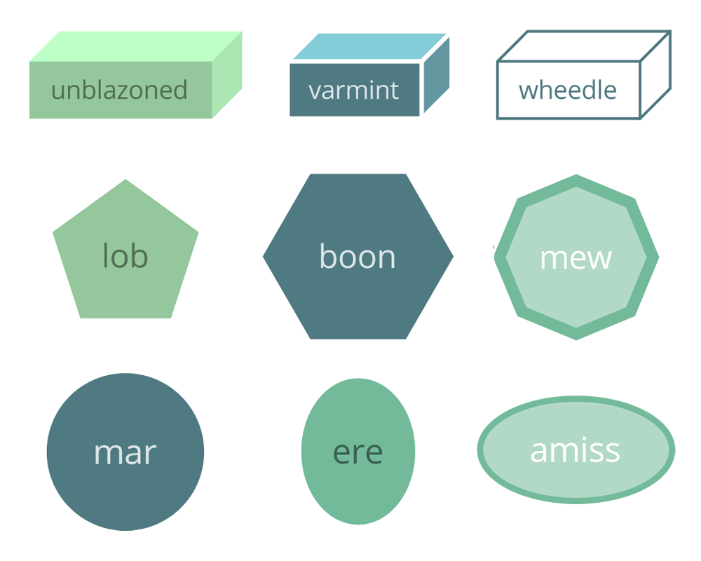
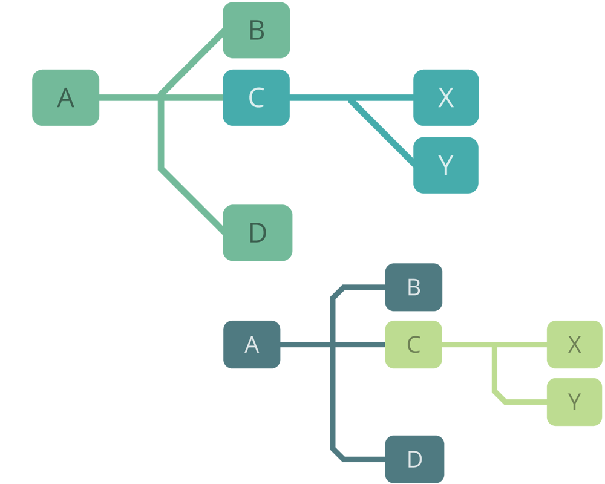
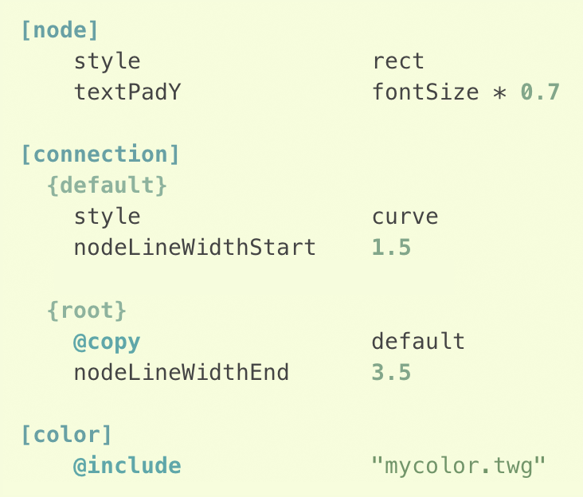
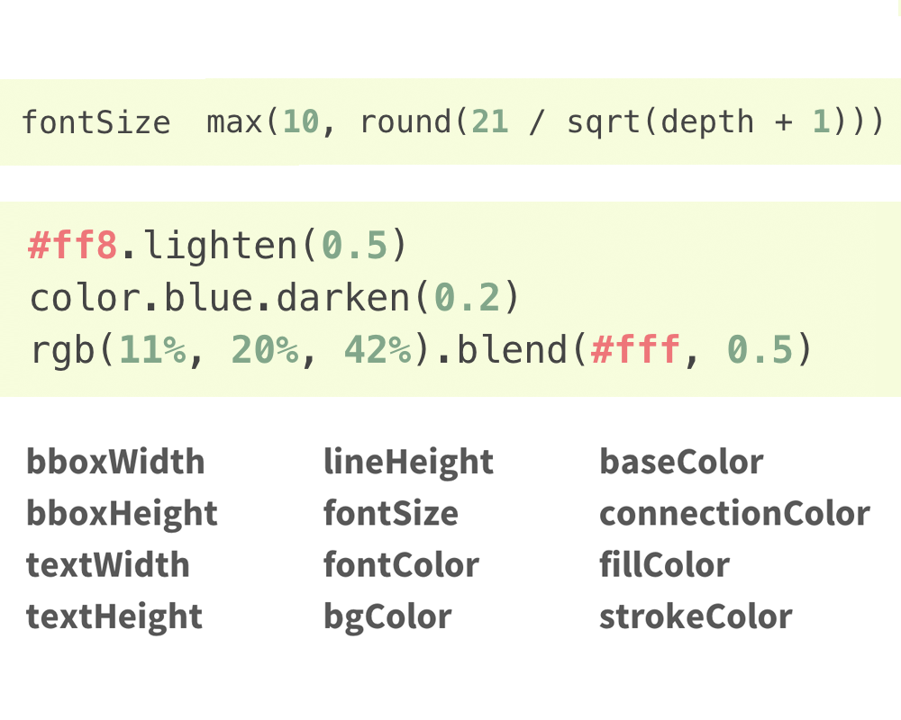

Generative tree visualiser for Python
Main features
-
Ready to go
- 16 visually fine-tuned built-in configurations
- 32 attractive looking colorschemes
- 512 styles achievable out-of-the-box by simply combining
the included configurations and colorschemes (see examples)
- Ideal for getting useable results quickly without having
to learn the configuration language


-
High-quality output
- Fully customisable node and connection shapes and coloring algorithms
- Gradient and drop-shadow support, even in PDF and PostScript files
- High-quality font rendering via Cairo
- PNG, PDF, SVG and PostScript output
- Supports Pycairo and NodeBox1 backends


-
Endlessly tweakability
- Simple yet flexible plain-text configuration
- Define all visual aspects of the tree in a generative fashion
- Property values can be combinations of literal values,
expressions of arbitrary complexity
- Ability to cascade configuration files and sections to
build up your own reusable library of custom styles
- Extensive reference documentation

